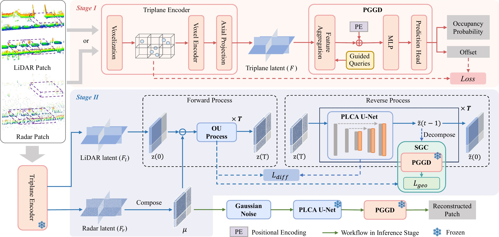
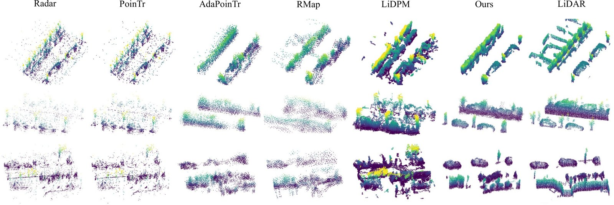
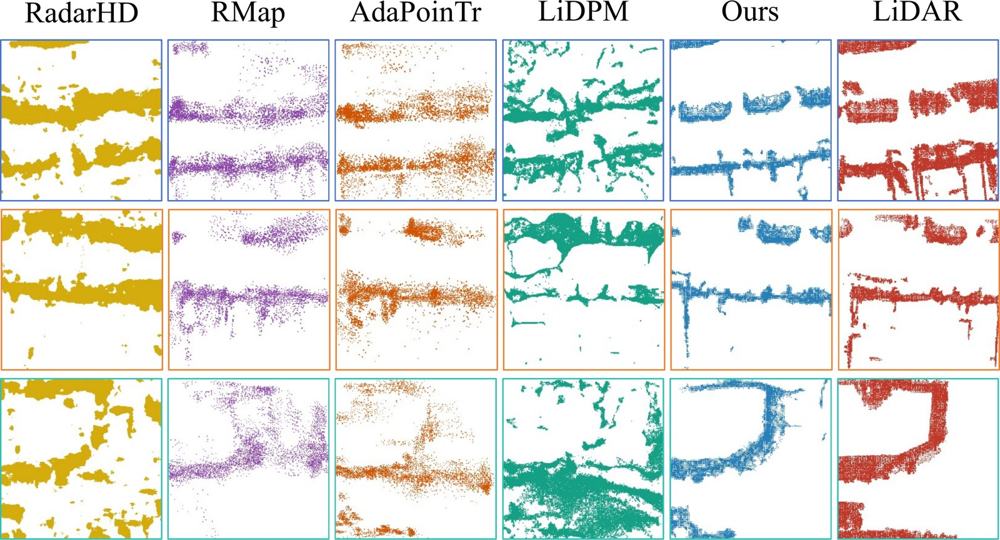
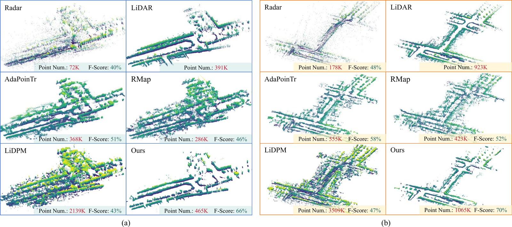
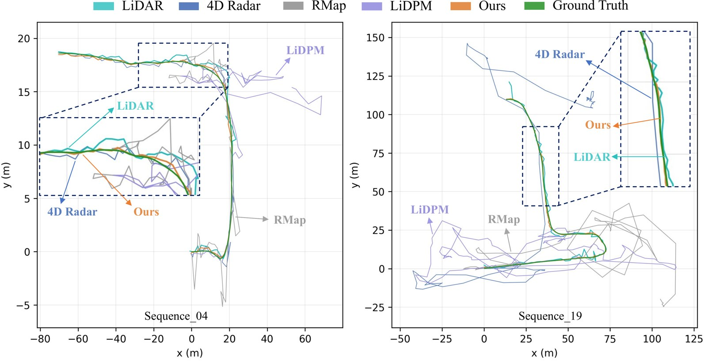
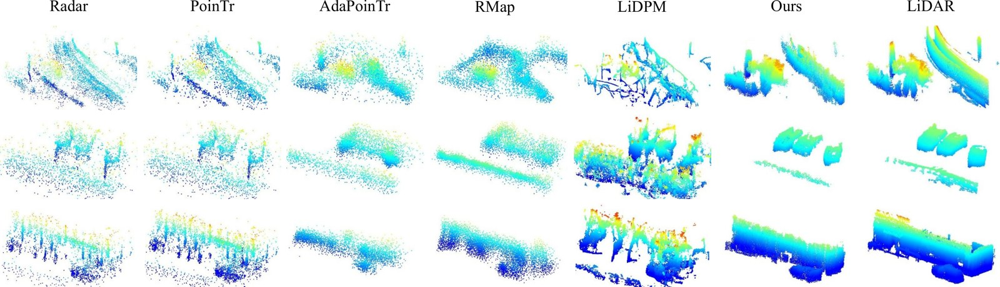
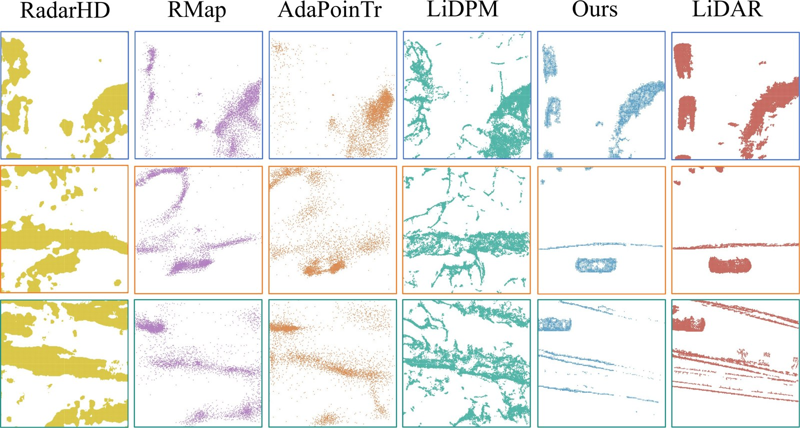
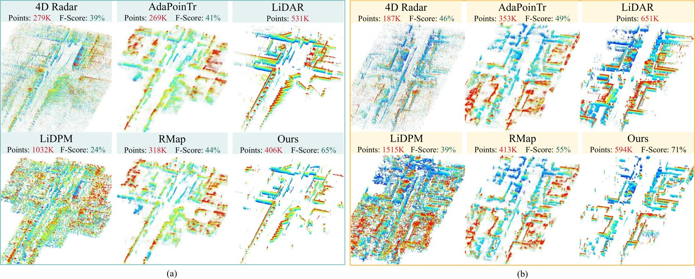

TriRaLDM: Triplane Latent Diffusion Model for 4D Radar Map Enhancement
Abstract
4D millimeter-wave radar has attracted increasing attention due to its robustness under adverse conditions, but its sparse and noisy data often result in maps with unclear details. Meanwhile, most radar enhancement methods rely on point-proxy or planar representations, which may compromise spatial continuity and 3D geometric modeling, respectively. To this end, we propose TriRaLDM, a generative framework that enhances 4D radar maps toward denser and more complete geometric representations via patch-wise restoration in a triplane space, which compactly preserves 3D structural information while maintaining spatial continuity. Within this representation, a diffusion process progressively restores radar map geometry by exploiting complementary spatial cues across the three orthogonal planes. LiDAR provides geometric supervision during training, whereas inference requires only radar input. The restored features are decoded into enhanced point-cloud patches, with radar observations serving as spatial priors. Experiments on the View-of-Delft dataset show that TriRaLDM achieves superior performance in 4D radar map enhancement.
Method
Pipeline. Stage I trains a shared triplane encoder and Point-Guided Geometric Decoder (PGGD). Stage II learns to restore radar latents toward corresponding LiDAR latents through reverse diffusion, with Point-Line Cross-Plane Attention (PLCA) and a Soft Geometric Constraint (SGC). Inference uses radar input only.

Experiments on View-of-Delft
We evaluate patch-level 3D reconstruction, patch-level bird's-eye-view (BEV) reconstruction, and full-map 3D reconstruction on the View-of-Delft (VoD) dataset.
Patch-level 3D reconstruction
Qualitative comparisons of patch-level 3D point-cloud reconstruction on the VoD dataset. TriRaLDM recovers local structures with clearer boundaries and fewer scattered responses.

| Method | F-Score ↑ @ 0.1 m | F-Score ↑ @ 0.3 m | CD (m) ↓ | HD (m) ↓ | MHD (m) ↓ |
|---|---|---|---|---|---|
| PoinTr | 0.181 | 0.708 | 0.506 | 6.402 | 0.324 |
| AdaPoinTr | 0.265 | 0.725 | 0.597 | 4.597 | 0.310 |
| RMap | 0.195 | 0.719 | 0.721 | 4.860 | 0.377 |
| LiDiff | 0.137 | 0.325 | 3.477 | 9.257 | 1.094 |
| LiDPM | 0.258 | 0.506 | 2.425 | 6.777 | 0.867 |
| TriRaLDM | 0.455 | 0.765 | 0.436 | 4.049 | 0.304 |
Patch-level BEV reconstruction
Qualitative comparisons of patch-level BEV reconstruction on the VoD dataset. Each column corresponds to a method.

| Method | CD ↓ | MHD ↓ | UCD ↓ | UMHD ↓ | FID ↓ |
|---|---|---|---|---|---|
| RadarHD | 0.826 | 0.198 | 0.712 | 0.198 | 225.648 |
| PoinTr | 0.832 | 0.224 | 0.685 | 0.182 | 272.935 |
| AdaPoinTr | 0.602 | 0.160 | 0.444 | 0.145 | 274.617 |
| RMap | 0.746 | 0.208 | 0.542 | 0.196 | 283.782 |
| LiDiff | 1.120 | 0.409 | 0.831 | 0.376 | 339.635 |
| LiDPM | 1.017 | 0.456 | 0.922 | 0.456 | 302.897 |
| TriRaLDM | 0.332 | 0.071 | 0.120 | 0.005 | 108.791 |
Full-map 3D reconstruction
Qualitative comparisons of map-level 3D point-cloud reconstruction on VoD. (a) and (b) show sequences 06 and 19, respectively; point counts and F-Scores are reported in the figure.

| Method | F-Score ↑ @ 0.1 m | F-Score ↑ @ 0.3 m | CD (m) ↓ | HD (m) ↓ | MHD (m) ↓ |
|---|---|---|---|---|---|
| RadarMap | 0.095 | 0.432 | 3.349 | 41.229 | 0.630 |
| RMap | 0.134 | 0.500 | 1.861 | 12.427 | 0.727 |
| AdaPoinTr | 0.177 | 0.552 | 1.636 | 12.329 | 0.627 |
| LiDPM | 0.181 | 0.459 | 2.215 | 13.727 | 0.820 |
| TriRaLDM | 0.357 | 0.674 | 1.681 | 11.019 | 0.528 |
Extended Experiments
Downstream task: localization
We evaluate whether enhanced map geometry benefits scan-to-map localization on VoD. The same radar scans and ICP-based localization pipeline are used with different global map sources; only the reference map changes. TriRaLDM achieves the lowest errors across all three reported metrics on both test sequences.
Trajectory comparisons for localization on the VoD dataset. Estimated trajectories obtained using different reference maps are compared with ground truth on sequences 04 and 19.

| Sequence | Frames | Reference map | ATE RMSE ↓ (m) | RPE ↓ (m) | RPE ↓ (deg) |
|---|---|---|---|---|---|
| Seq. 04 | 397 | 4D Radar | 0.762 | 0.744 | 2.680 |
| LiDAR | 0.864 | 0.360 | 2.125 | ||
| RMap | 26.914 | 0.775 | 2.559 | ||
| LiDPM | 47.571 | 1.122 | 2.264 | ||
| TriRaLDM | 0.613 | 0.297 | 1.785 | ||
| Seq. 19 | 784 | 4D Radar | 72.876 | 1.582 | 6.125 |
| LiDAR | 1.062 | 0.395 | 1.895 | ||
| RMap | 93.268 | 2.197 | 4.595 | ||
| LiDPM | 68.704 | 1.609 | 4.395 | ||
| TriRaLDM | 0.744 | 0.332 | 1.727 |
Experiments on MAN TruckScenes
To evaluate generalization beyond VoD, we conduct patch-level 3D, patch-level BEV, and full-map 3D reconstruction experiments on MAN TruckScenes. The dataset provides a different radar configuration, driving scenes, and radar-data distribution. All compared methods use the same preprocessing and evaluation protocol.
Patch-level 3D reconstruction
Qualitative comparisons of patch-level 3D reconstruction on MAN TruckScenes.

| Method | F-Score ↑ @ 0.1 m | F-Score ↑ @ 0.3 m | CD (m) ↓ | HD (m) ↓ | MHD (m) ↓ |
|---|---|---|---|---|---|
| PoinTr | 0.155 | 0.749 | 0.539 | 7.511 | 0.280 |
| AdaPoinTr | 0.260 | 0.757 | 0.457 | 4.897 | 0.314 |
| RMap | 0.324 | 0.779 | 0.467 | 4.646 | 0.300 |
| LiDiff | 0.050 | 0.253 | 3.518 | 9.849 | 0.995 |
| LiDPM | 0.151 | 0.390 | 2.875 | 9.519 | 0.986 |
| TriRaLDM | 0.498 | 0.819 | 0.375 | 3.968 | 0.279 |
Patch-level BEV reconstruction
Qualitative comparisons of patch-level BEV reconstruction on MAN TruckScenes.

| Method | CD ↓ | MHD ↓ | UCD ↓ | UMHD ↓ | FID ↓ |
|---|---|---|---|---|---|
| RadarHD | 0.795 | 0.338 | 0.732 | 0.338 | 216.962 |
| PoinTr | 0.914 | 0.288 | 0.799 | 0.269 | 233.274 |
| AdaPoinTr | 0.486 | 0.152 | 0.326 | 0.127 | 262.292 |
| RMap | 0.465 | 0.123 | 0.295 | 0.091 | 246.374 |
| LiDiff | 1.452 | 0.542 | 0.979 | 0.295 | 312.657 |
| LiDPM | 1.409 | 0.704 | 1.232 | 0.699 | 328.242 |
| TriRaLDM | 0.287 | 0.077 | 0.044 | 0.003 | 105.623 |
Full-map 3D reconstruction
Qualitative comparisons of full-map reconstruction on two representative MAN TruckScenes test scenes. Point counts and F-Scores are shown in the figure.

| Method | F-Score ↑ @ 0.1 m | F-Score ↑ @ 0.3 m | CD (m) ↓ | HD (m) ↓ | MHD (m) ↓ |
|---|---|---|---|---|---|
| RadarMap | 0.107 | 0.431 | 10.829 | 37.165 | 1.404 |
| RMap | 0.167 | 0.488 | 5.103 | 17.818 | 1.142 |
| AdaPoinTr | 0.130 | 0.506 | 4.662 | 17.622 | 1.148 |
| LiDPM | 0.111 | 0.372 | 7.284 | 18.117 | 1.678 |
| TriRaLDM | 0.430 | 0.689 | 3.626 | 17.653 | 0.689 |